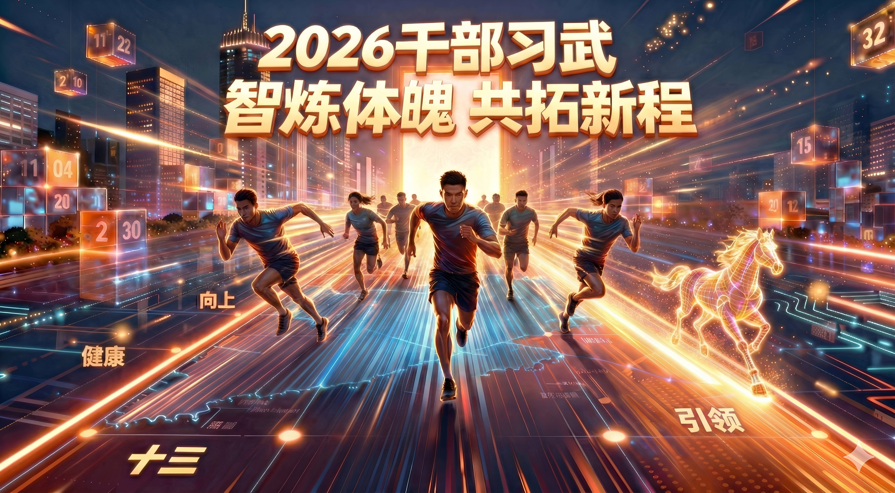
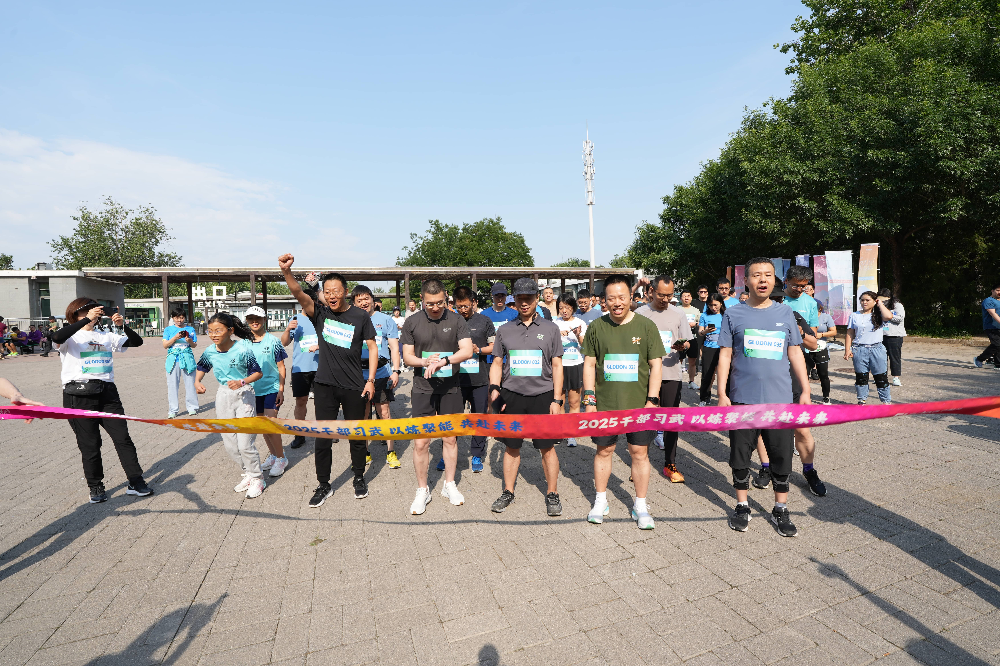
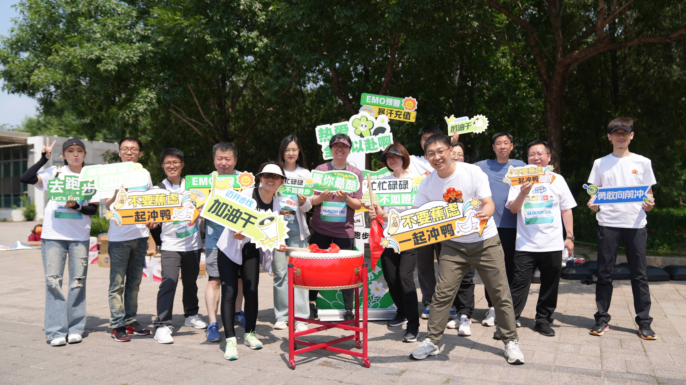
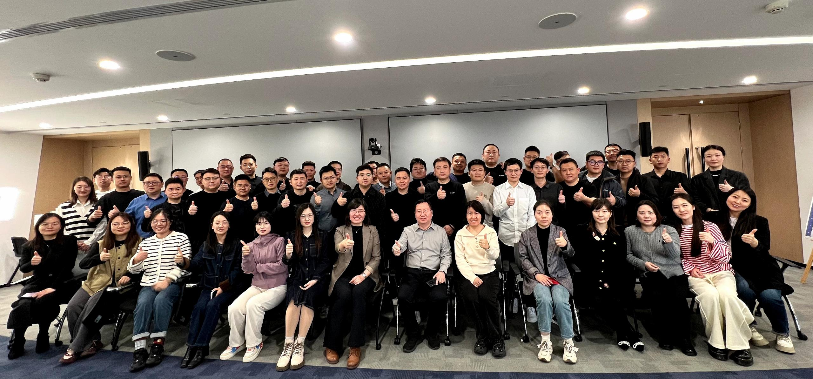
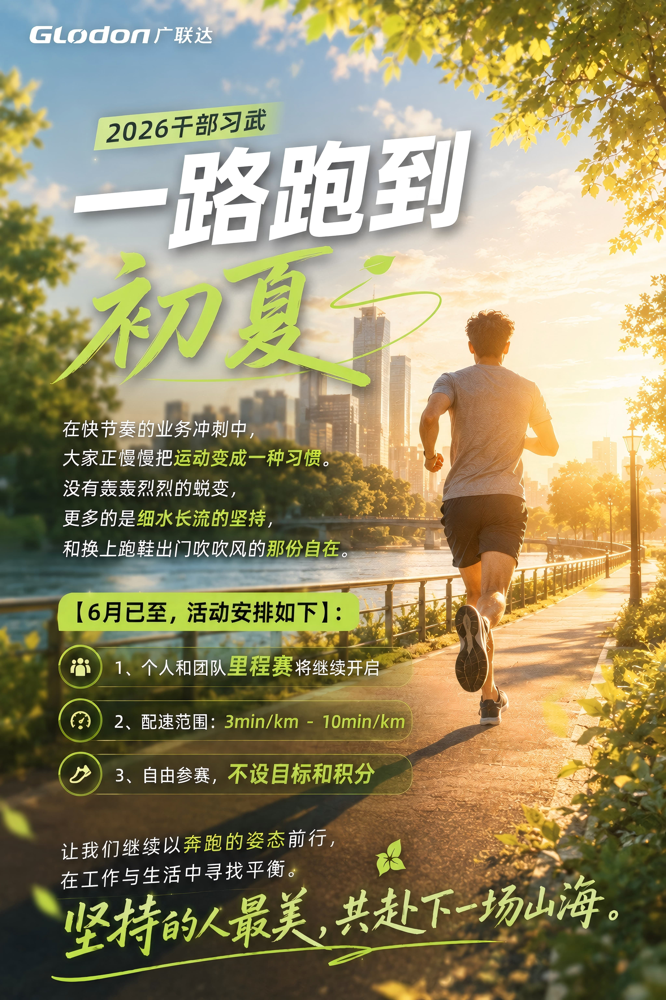
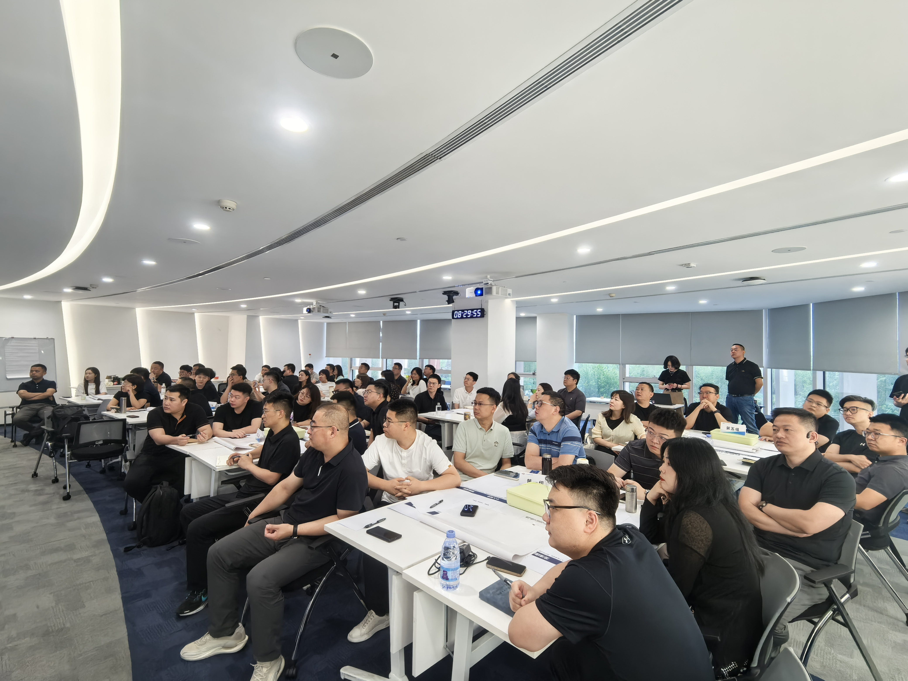
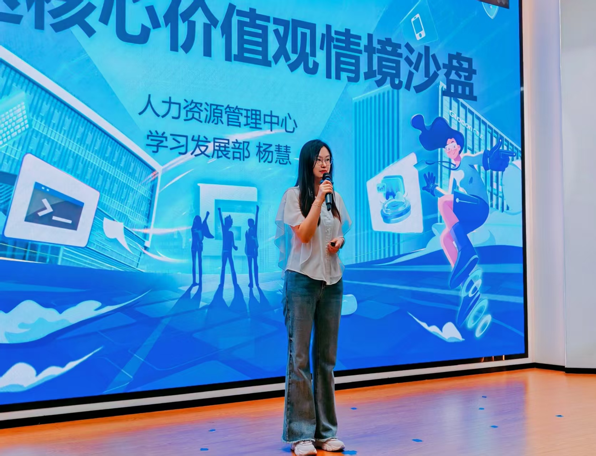
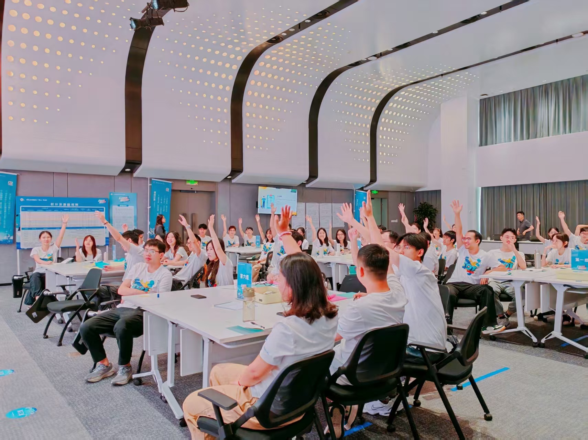
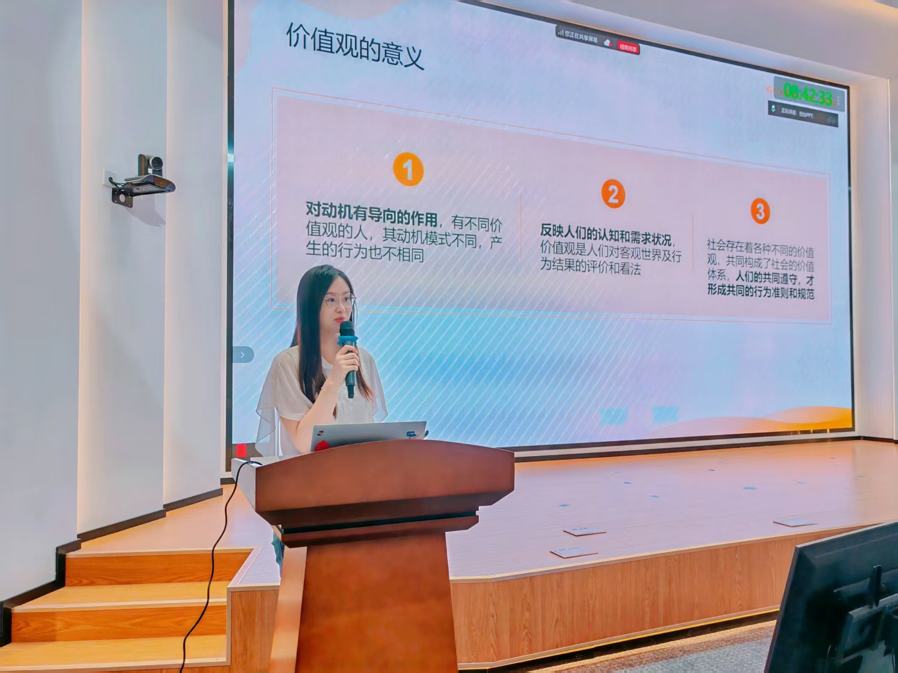

01
高绩效与复合视角
2025年度绩效A/前10%，具备 COE + HRBP 双重视角，兼具体系设计与业务现场理解。
AI Enabled Talent Development
以人才发展专业能力为底座，以 AI 工具流为杠杆，推动组织学习、干部运营与关键岗位培养从项目交付走向可复用的业务能力沉淀。
前0%
2025年度绩效A
0倍
AI 数据运营提效
0成本
项目视觉物料生成
Core Strength
01
2025年度绩效A/前10%，具备 COE + HRBP 双重视角，兼具体系设计与业务现场理解。
02
擅长关键岗位梯队建设、干部运营与千人级复杂项目闭环管理。
03
通过大模型、提示词工程与自动化脚本实现 9 倍提效与 0 成本物料生成。
04
集团认证讲师，授课满意度 9.76/10，擅长将隐性经验显性化。
Live Proof
9x Efficiency Black Box
模拟“干部习武”项目中 43 支战队的原始里程数据清洗过程。
| 战队 | 负责人 | 总里程 |
|---|---|---|
| 青蓝先锋队 | 王璐 | 1,302.7 km |
| 星火战队 | 刘洋 | 1,486.0 km |
| 北极星战队 | 孙悦 | 1,566.0 km |
| 战队07 | 李航 | 938.0 km |
AI Toolkit Terminal
点击工具按钮，查看 AI 在真实人才发展项目中的调用日志。
Timeline
2022.07 - 至今
含分公司 HRBP 轮岗经历。
2019/09 - 2022/07
年级排名 5/92。
2014/09 - 2018/07
专业排名 6/95。
Signature Projects
项目 01
首创业务部门战队制，将运动参与与团队荣誉绑定，形成可持续的干部健康文化运营机制。
运营机制
战队制绑定团队荣誉，激活干部群体持续参与。
AI 提效
自动化清洗 43 支战队数据，提效 9 倍，视觉物料 0 成本。
硬核数据
全年运动里程破 22 万公里，目标完成率 115.7%。
项目 02
聚焦近万名员工的 AI 实战落地，构建“学练评赛”闭环，推动智能体生态形成。
业务难题
解决万人作业评审难题，让学习从认知走向真实应用。
运营闭环
学练评赛联动，结合 AI 智能初评与优秀案例沉淀。
硬核数据
23,576 学习人次，沉淀 1,194 份案例，创建 1,000+ 智能体。
项目 03
面向 110+ 中层后备，将培养目标从“完成培训”转向“解决业务痛点”。
培养对象
覆盖 110+ 中层后备，聚焦关键岗位梯队建设。
项目机制
训战评一体，引入人才评估机制，连接业务场景。
硬核数据
满意度创同类新高 4.985/5，完训率超 90%。
Recognition
Visual Proof

> Model: Anygen V3 | Prompt: A cyberpunk style marathon poster, 1000 people running, neon blue lighting --ar 9:16

> Model: Anygen V3 | Prompt: executive wellness campaign key visual, team honor, blue glass light, premium dark poster --ar 4:5

> Model: Anygen V3 | Prompt: AI learning hackathon poster, business agents, futuristic dashboard, cyan glow, clean typography --ar 16:9

> Model: Anygen V3 | Prompt: HR digital transformation visual, knowledge graph, training roadmap, elegant black cyan style --ar 1:1

> Model: Anygen V3 | Prompt: HR digital transformation visual, knowledge graph, training roadmap, elegant black cyan style --ar 1:1

> Model: Anygen V3 | Prompt: HR digital transformation visual, knowledge graph, training roadmap, elegant black cyan style --ar 1:1

> Model: Anygen V3 | Prompt: HR digital transformation visual, knowledge graph, training roadmap, elegant black cyan style --ar 1:1

> Model: Anygen V3 | Prompt: HR digital transformation visual, knowledge graph, training roadmap, elegant black cyan style --ar 1:1

> Model: Anygen V3 | Prompt: HR digital transformation visual, knowledge graph, training roadmap, elegant black cyan style --ar 1:1
YangHui.AI - 智能面试助理
快速解析 AI+HR 实战亮点